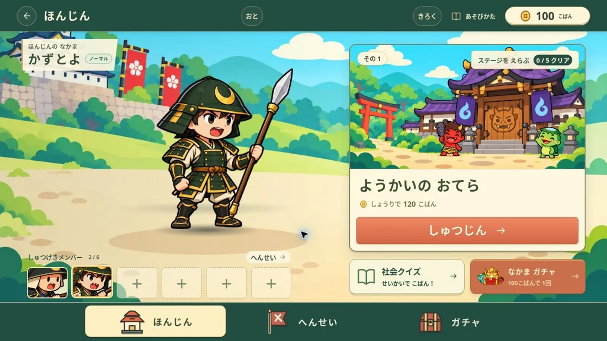
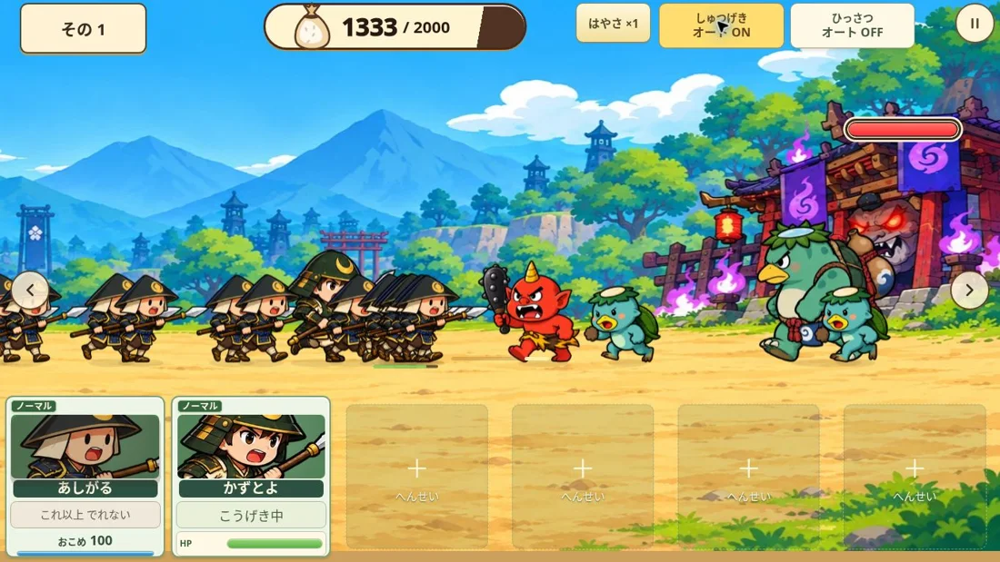
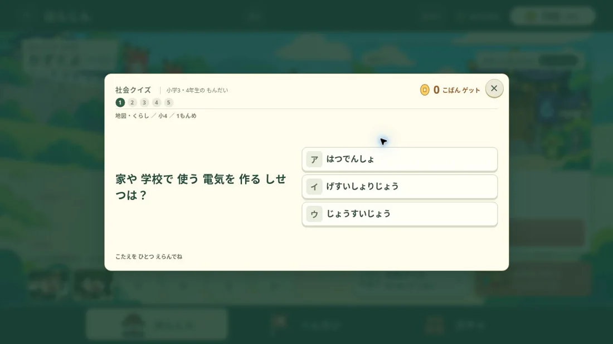

しゃかいちず・くらし・れきし
せんごく ようかい 合戦
まなんで、なかまを あつめよう。
社会クイズで こばんを ゲット！
武将を なかまにして、ようかいとの 合戦に ちょうせんしよう。
- 小学3〜6年生むけ
- なかまを あつめる
- むりょう

どんなことを まなべる？
小学3・4年生の 社会
地図や、まちの くらしについて まなぼう。
小学5・6年生の 社会
日本・れきし・せいじの もんだいに ちょうせん。
あそびかた
クイズで こばんを ゲット
5もんの 社会クイズ。1もん せいかいで 20こばん！まちがえた もんだいの ときなおしも できるよ。
ガチャで なかまを あつめる
100こばんで 1回。なかまを えらんで しゅつげきメンバーを へんせいしよう。
5つの 合戦に ちょうせん
カードを タップして しゅつげき。ひっさつや 倍速・オートも つかえるよ。
ゲームの がめん



公開版の実際の画面（2026年10月24日撮影）。更新により表示が変わることがあります。
保護者の方へ：学習内容と対象
小学3〜6年生向けの社会クイズと、武将の収集・合戦を組み合わせたゲームです。小学3・4年生／5・6年生から問題を選べます。正解するとこばんを獲得し、仲間集めに使えます。ゲーム内の武将・妖怪・合戦演出は創作です。
| 学習内容 | 地図・地域のくらし・日本・歴史・政治などの3択クイズ。解説と問題の出典、間違えた問題の復習に対応。 |
|---|---|
| 対象の目安 | 小学3〜6年生。まだ習っていない内容は保護者と一緒に取り組んでください。 |
| 利用環境 | スマートフォン・タブレット・パソコンのブラウザ。横向きで遊びます。無料・インストール不要です。 |
| 記録と引き継ぎ | 記録はブラウザ内に保存。「きろく」からバックアップファイルを保存・復元できます。別端末への自動同期はありません。 |
よくある しつもん
おとは かえられる？
「おと」からBGM・効果音の音量変更と消音ができます。
なかまが あつまらないときは？
新しいレジェンドが29回出なければ、30回目は未入手レジェンドが必ず出ます。残り回数はガチャ画面に表示されます。
きろくを のこすには？
同じ端末・同じブラウザで再開してください。サイトデータを消す前や端末を変える前に、「きろく」からバックアップファイルを保存してください。
まなんで、なかまを あつめよう。
ゲームいちらんへ →